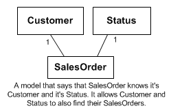

On page 225 Larman states that novices under emphasize interaction and over
emphasize class diagrams. I am a novice. After looking at class diagrams,
I want to create SSD's to get my methods then plug these methods into
class diagrams. Why do I really need interaction diagrams?
Because you don't know where to put the SSD operations, or what else happens
when the methods are called.
The system event should trigger a cascade of operation calls.
Each call should be to a method with a few lines of code.
With skill or luck each operation will be in a small class
along with its data.
Maintainable and stable code tends to have many smaller classes
with short methods: 90% have less than 10 lines of code.
Each understandable on its own.
Most of the operations are not in the SSD. Tracking the
interactions lets you think them out.
So without the interactions...
you end up with a few bloated classes with large, unmaintainable,
and buggy methods. This was a popular approach 20 years ago.
I'm not sure when they should be used and what exactly each one accomplishes
Interaction diagrams help you draw design class diagrams. They define the source
code in the software your are developing.
[ Interaction diagrams ]
below.
I am still struggling with the reasons for each diagram and what makes them
vital. Can you clarify the two diagrams and their purpose?
Interaction diagrams
are either Sequence diagrams or Communication
diagrams. One is good for showing the sequence and the other for
where the communication is occurring. That's all. Some people
like one and some the other. I can't guess which is the right one for
your future career -- so we will do both this quarter.
We use interaction diagrams to design objects that fulfill the user's
needs.
Rules to sticking, it not helps?
The idea is to communicate .. and that means a shared language.
In civil and mechanical engineering you haven't done a complete set of
drawings until you've got a plan and one or more elevations. In software
you haven't completely described it until you have both static and dynamic
models mapped out.
Personal note: In the 1980's I developed a diagram that did both static
and dynamic models at once. I discovered that I needed a three-dimensional
virtual world to draw it in. I had a student starting work on this project
but she ended up researching mash-ups.
It looks like class diagrams are very similar to domain diagrams. What are the differences?
Domain diagrams are simplified UML class diagrams: no operations,
no visibility, no roll names. They have a particular purpose:
to learn about and/or document the world in which the software is
running. They also become an inspiration for our software designs.
We also have design diagrams with operations, associations, ....
We use these to plan how our software will work -- in detail. Notice
that the operations come from studying the interactions between objects
rather than the domain.
Class diagrams are a multipurpose tool.
How is it decided to use a UML Class Diagram rather than one of the other
diagrams or models?
Use class diagrams to (1) model the domain and (2) to model
the program/source code.
As a rule: do the domain model before SSDs and start the Design class diagram
after doing one or two interaction diagrams. Add to the design class
diagram each time you finish a set of interaction diagrams.
What if you are building a small application that does not need to be object oriented? Do you still make a class diagram?
Not really -- but I've done some nice Domain models for presentations
about software that was not OO.
The only time a project doesn't have a class diagram is when there
are no classes involved. The kind of trivial programs we tackle
in CSci201. Then, of course, you have the badly scheduled project
where you try to save time to beat the deadline. Even here
it is worth drawing a quick and messy class diagram.... to quote
an ex-student, from long ago, working on a program left behind by another
program: "What I need is this ^%@$#s programmer's trash can."
This isn't entirely about chapter 16. We've gone over so many different
diagrams that I'm starting to forget the sequence for them and how they fit
together. Could you briefly go over the main ones and bridge one to the
next? That'd help more than any question I have about the minutiae of
class diagrams.
OK. First look inside the front cover of the book:
[ artifactrelationships.gif ]
Here is a table based on that.
Table
| From | generate Artifact
|
|---|
| Stakeholders | Use Case Diagram
|
| Use case names+Stakeholders | Scenarios, Supp. Spec....
|
| Scenario | SSD
|
| Stakeholders etc | Domain Model
|
| Operations in SSD | Contracts
|
| Operations+Domain model+Design Classes | Interaction diagram
|
| Interaction diagram+Domain | Design Classes
|
| SSD+Design classes | Tests
|
| Design classes+interactions | Source Code
|
| ...
|
(Close Table)
When is it necessary to use a static or dynamic view class diagram?
Class diagrams are always static. Interaction diagrams show dynamics. Do not confuse
the two types of diagram.
As a rule, you will need a class diagram if there are any classes in your code, but
you only draw interaction diagrams (one per SSD message) if the interaction is interesting.
What does a UML keyword do when making a UML diagram?
It modifies the meaning of the part of the diagram it is attached to.
When making function names for class diagrams, do we need to make the names
as obvious as possible or can we organize it to our liking?
Always make names as obvious as possible. Learn to like precise naming.
This is especially true of class and function names.
One of the classic refactoring steps in source code is to rename a class,
function, or attribute to accurately say what it is or does.
Static is the opposite of dynamic.
Showing the classes and connections between them + their attributes and
operations. It is called static because it does not show any changes. It
shows the fixed structure of a design.
In the figure 16.1 the class diagram looks at the first time overloaded of
information, its description is very much as the flow of events scenario.
So, what is the reason to use Class Diagrams in OOA/D that looks very
ambiguous?
Class diagrams do not show the flow of events. The show what internal
events
are possible. One class diagram allows hundreds of scenarios.
The class diagram is a central collection of information -- and can be
quite overwhelming ... and the example in the book deliberately shows you
every possible
variation. Don't do diagrams like this -- except in books and quizzes and
finals (If asked).
By the way: the Unified Modeling language has something for everybody, but
most people don't need everything in it.
How many different kinds of diagrams use all the basic line ends when
connecting boxes? (arrow, diamond, filled arrow, etc.)
The different line ends tend to turn up in different types of diagrams. For
example the filled (message) arrow head is not used in a class diagram
for anything. However the open "stick" arrowhead is used in both
interaction and class diagrams for different purposes!
What are the differences between the use of Attribute Text and Association
lines?
They are different ways of saying the almost same thing.
The line is more obvious. And so more useful!
You can use both in one diagram.
You can even express the same attribute both ways. Redundant
but precises.
First, if the attribute's value is an object in another class in the
diagram
then it is best to show the connection clearly as a line. If the
diagram is getting cluttered then it is telling you to rethink the
design.
Second, if the attribute is just a simple data type then you should
show it in text form.
Other than that,
You need to make a judgment call about whether to
do one, the other, or both. Balance speed with precision. The good
news is that doing the wrong thing rarely puts a project at risk.
The text seems to suggest that an Interaction diagram should come before a Class diagram. Is that always the case?
Close..... It is wise to sort out the interactions before you work out your design.
So interaction diagrams proceed the Design Class Diagram.
However: it helps to have a Domain model before you do an interaction diagram.
However2: In the next iteration you already have a Design Class Diagram and
draw new interaction diagrams before updating the design.
Interaction diagrams give a dynamic view of a set of objects in different classes
doing things. Dynamic means showing the sequence and changes.
Class diagrams show the static view. It shows what can be done to objects in a class but
not when. It also doesn't show why an operation exists -- who uses it or in what
scenario it is needed. The dynamic interactions supply this info to the designer.
Rule: do not try to do one diagram that combines interactions and classes. Have
one interaction diagram for each step in a scenario plus one class diagram for all
the classes you are working one. Many scenarios >--- one DCD.
The book states that most elements in Figure 16.1 are optional. Which ones
are not optional?
First message -- put a PostIt note on Figure 16.1 for project work
and some quizzes. You could even
photocopy it to make a cheat sheet for quizzes.
Larman is providing comfort. All of them are optional until they are
needed. I think of some of them as like some obscure tool that does one
job
well and isn't any help otherwise. It is there in my toolkit. It
clutters things up and gets in the way. But I don't throw it out because
one day it will be needed again. For example -- the gadget that makes
modular phone jacks is a single purpose tool. And one day I'll need it
again.
Now some of the notations are like my old hammer and screw drivers.... use
them
every day.
Or to put it another way -- which road signs are optional? Do I have to
learn
what they all mean?
The book shows 3 ways to show UML Attributes. Attribute text, association
line, or both. Using both does not seem a good way for me because if you
change the Attribute text you have to remember to change it in two places
which in my opinion can lead to errors. Which one do you recommend?
You express the problem well. I recommend that you don't sweat it. Make
a rapid choice and be ready to switch or add notations later.
The book indicates + as a public attribute and - as a private attribute,
which makes sense, but then says that all attributes are assumed private
otherwise. Wouldn't this be confusing to someone not familiar with UML?
Have you had any experience with this?
Yes. But in an experienced team .... not a problem.
The book makes only one mention of pseudocode, and it is not in the index.
I scanned the next chapters but none there either. Once the class diagram
is done you have to move to code and I have been taught to go with psuedo-
code first. Is there a standard method for pseudocode, and how detailed
should the class diagrams be to go into pseudocode next.
The UML2.0 does provide an
Action Language
to define code. YAGNI in this class.
My research has not shown me any standard
pseudocode
(notice the spelling so you can Google it!)
The one in most text books
(and some courses
[ pdl_std.html ]
) is nearly 25 years old and based on
a language developed in 1964 called Algol. This language
is a great-grandmother of C. So why not use C with comments?
Joke: What is the name of the pseudocode based on the Java language?
answer below.
Fact: Each team should agree on the pseudocode they want to use.
Fact: modern object-oriented code makes pseudocode a waste of time.
You might as well write the methods (all 10 lines?) out in the source code
and TEST them.
But: If you need a large complex method or algorithm:
- Ask if a collection of simpler objects could do the same thing.
- Hit the CSCI books ... and COPY + and say where you got it.
- Source code plus comments... TEST IT.
Other problems: teachers need to read/grade paper.
Old fashioned managers and analysts....
There is also a more abstract
Object Constraint Language
or
OCL
that is used to specify, without details the properties of operations and data..See ../samples/ocl.html
Personally, I find sequence diagrams with frames and actions (later) are close to pseudocode anyway.
I am confused when it comes to Association Classes. Would you please
explain?
An association indicates a relationship between classes. Sometimes a
relationship has a life of its own and needs a third class to keep track of
it. This third class knows about each pair of objects that are
linked plus data about the state of the link. It will have operations
that track changes and report on the status.
A classic example -- two people who form a couple...
In mathematical set theory -- the association class is based on the
Cartesian product. etc.
They are rare and I tend to replace them by a normal class with
similar responsibilities.
What is the best way to use a interaction diagram in writing a class, is
there a method you like best.
I like drawing interaction diagrams while I develop the class diagram.
- Work out an interaction --using what is in class diagram if possible.
- Modify classes to support the interaction.
Many examples follow in the book.
The book says a change from UML1 to UML2 is that there are no return types
in the signatures of the operations. It claims that it is "an obvious
problem, but purposefully injected into the UML2 specifications." Why?
The book says that some specifications "will revert to a UML1-ish syntax."
How are we required to do the signature.
Stick with the old in this class -- add ":Class Name" to indicate return
types
of operations. More next.
Can your break down the UML syntax format for Operations?
- operation::= name "(" parameters ")" optional( ":" returned_object_class)
constraints
The parameters look like this
- parameter::= name ":" class
when creating our diagrams, should we use some type of standard notation
for functions and variables, or if we know what programming language we are
using, we should use the syntax of that language?
In most projects you will have 2 or 3 language involved -- which notation
should you use?
I'd stick with the standard.
In this class I expect you to use the standard notation:
void zark(int ping);
will loose points, but
zark (ping:Int)
is OK -- and a bit shorter.
Figure 6.1 only shows a few of the UML keywords, where can I find the
others?
The Object Management Groups (OMG) web site lists the standard ones
in the draft UML standard. I think the UML Language Reference Manual
also will list them.
I suppose I should put them up on my web site.... but you
and others can add your own! So there is no complete list.
By the way -- if you'd like to do an independent study of the keywords
and stereotypes in UML2.0 -- creating the documentation for my web site...
you could earn credit for an elective!
I need some clarification on the operations and methods.
This is jargon. An operation describes how to call a function
or how to send a message to a class -- and what to expect in return. The details
of how the function/operation does it is called the method. A classic example
would be
sort()
which reorganizes a set of objects in a container. This does not define which algorithm
is to be used -- is it bubble, selection, insertion, quick, merge, or something
exotic that works well in out application only?
If we had to specify this we would put it in a comment and call
that the method of sort.
What's a good way to identify when association classes are needed? It's not just every time one is shown in our diagram of interfaces, is it?
What is a diagram of interfaces?
You use an association class only when you have a relationship that also has data or
operations associated with it.
Personally.... I just add a class that "Reifies" the relationship -- which is how you
code it.
What is an abstract class?
A class that has no objects of its own. In C++ you indicate this by writing "=0" in
any virtual member function. In Java you declare:
public abstract class Name {.....}
Typically, an abstract class is a generalization of a set of concrete classes. You can
then declare a pointer that can be attached to any object in any of the
special concrete classes as the program runs. You declare it as pointing thru the
abstract class. In C++ something it can look like this.
class Abstract{....};
class Concrete1: public Abstract{....};
class Concrete2: public Abstract{....};
Abstract * pointer;
...
pointer = new Concrete1(....);
...
pointer = new Concrete2(....);
...
I have some working examples you can download, compile, run, etc in
[ ../cs202/abstraction.html ]
On page 260, Larman asks if generalization is the same as object oriented inheritance. He answers "no" if it is used in a domain model conceptual-perspective class diagram. Then he practically answers "yes" when it is used in DCD software-perspective class diagram. I'm still a little confused by this and wonder if you can help explain more about this concept?
In the world you (a student) don't have to write
class Student : public Human {....};
to assert your humanity. The relation is part of the domain.
In C++/Java/.... you do. And the coding of this
effect is called "inheritance".
We use similar class diagrams to picture the world outside the computer -- domain
models -- and inside the computer -- Designs. The idea of "inheritance" has a lot
of technical baggage -- but in the real world: Cats are Pets and Pets are Animals, and
Animals are Creatures, and Creatures are Things.
In the domain we are talking philosophy, in the design we are talking technology.
An Inheritance is a technology for implementing generalization.
What is the difference between dependency and association and how to
distinguish them?
A association means that objects in one class know about objects in the
other
class. If the is an association between class A and class B then
each object a in class A knows about a number of B objects. And vice
versa.
Typically a has an attribute that refers to a B.
This is a strong form of dependency.
Class A depends on class B if a change in B is likely to force
you change B. It happens in several way: an operation in
A uses a B to get some result, An operation A returns an object of
type B, ... Notice that an association is also a dependency but we
don't show it.
should dependency lines be connected for every component of a package?
Not always. THis can get messy and may indicate a bad architecture.
If every class in a package has the same dependency -- don't connect them
all, just the package itself. If only one or two depend then connect
them individually. In between -- a matter of judgment: which statement
is most valuable: "only these depend"(individual classes), "some of these
depend"(package).
Can you explain coupling?
Any time you have two pieces of source code and one of them refers to a name
defined in the other then they are coupled. Changing one can break the other. This
makes changing code difficult. And code is always changing. So we have a dozen
technologies and techniques that reduce or control coupling.
We will study a more precise definition later in this course.
Are dependency and coupling the same thing?
They are very close in meaning.
Coupling is the older term and is a symmetric relationship. Two
modules are coupled together. But one module depends on the other.
Any dependency is a form of coupling. And couplings can be quite
weak. But a coupling can be two way (horrible to work with) when
A depends on B and B depends on A. Then you always have
to work on both A and B at once.
Can you explain the figure 16.12 different notations to show interfaces in UML? which one is more popular? The socket one?
All the notations have the same meaning. Some are easier to draw but less
detailed.
I have not seen any surveys on the use of these symbols. The "lollipop" "---o" is
easy to draw and use. The "cup" is a little clumsy. Putting them together to
describe how software components implement a system -- depends on people using components.
If they do I'm sure they use the notation -- but again I don't have the figures.
An interface is like a power socket. If you have the right kind of
plug you can get power. And the power can come from a dozen different power stations.
Because it is a standard your laptop and my iPod can both recharge at the same
interface. And we don't care where the power is generated.
An interface describes a set of operations/functions for communicating with a class.
The client calls those functions and class that has those functions can act as the
provider of the operations.
By the way... do you know how many interfaces are defined in a large
program?
[ article1 ]
(you don't need this data but it is amazing).
Are there any other important UML interface notations?
Not for this class.
There are a few other notations (a little square box on the
boundary of a component) that you can find in the OMG standard
[ 11port.gif ]
(on the web if you dig for it). It isn't in the index of Fowler's
book -- but in the diagrams on pages 136-137.
The square box (a port?) indicates a collection of required
and provided interfaces that are grouped together.
This notation may (or may not) become important.
So if composition is vague in UML where should we go in depth with it?
(glossary, never?)
Composition is defined very precisely -- but many think it is the
wrong definition:-(
Use it precisely as it is defined: a composition has control over
the deletion of it's parts. Removing the whole will destroy
the parts.
On the other hand aggregation is not well defined, see below.
Can you give some examples of why the author recommends that we not use
aggregation in UML?
Not really -- I have tons of examples of diagrams that use it -- and
where the author doesn't know what they mean by it!
In CSCI320 we use <>----> to indicate a pointer in a physical data
structure diagram. But it is cleaner to do ----->.
This is the heart of the problem. <>-----> helps C++ programmers
indicate pointers to objects. In abstract and in Java this is a waste of
time.
Objects are always handled as pointers! No need to worry -- the compiler
does it for you.
Can composite aggregates [fat diamond arrows] be used in association classes to show a hierarchy?
Yes. It is called the "part-whole" or "HAS A" hierarchy.
Do not confuse it with the "is a special kind of" hierarchy formed by generalization.
This one dates back to Aristotle.
In OO and in Ontologies we have both hierarchies...
By the way: Generalization is not a precise hierarchy but a
"Directed Acyclic Graph" -- no loops but one class can be
a special case of many more general classes.
The classic example (From Fowler) is having a Sales Order that has many
Sales Items
- SalesOrder 1-----------* SalesItem
but each Sales Item is for a particular Product, and on a given Sales Order
there is no more than 1 line
for each Product:
- SalesOrder [Product]1-----------1 SalesItem
In other words a qualifier acts like a subscript or a key. Without it many items
fit, but with it, just one is selected.
Can you give us an example of a Singleton pattern?
A singleton is a class with a single object -- created by the class and
accessed via the class.
Sample uses:
- The number π. In a math intensive program you need to use the
value of π in lots of different places. But you are writing in a pure
Object-Oriented language so you can't do the C++ thing of an external
constant
#include <cmath>
const double PI = 4*atan(1);
So instead you place it in a class called MathConstant and program it
so that this is static and unchanging once created
MathConstant.PI
(Typical trick: the MathConstant constructor is private).
- If you add E, SQRT2, etc to MathConstant then it is still a singleton!
- You want to be hide the details of handling a data base. So you define a
single object to which you send all the data base handling commands
as simple messages with arguments. The Singleton pattern lets
you make the data base accessible without exposing which data
base it is. You just throw commands at it:
DataBase::instance().select("PARTNUMB", "PART");
- To create objects in one
a family of classes you can have a Factory object that knows,
for each subclass what kind of object you need and how to construct
it.
- More later ...
To put it a different way: Singletons allow us to create operations
that are in essence free standing functions within the OO paradigm.
How detailed does the singleton class need to be when you are trying to indicate that one instance?
You put a "1" in the box. And you copy the code from the last singleton you wrote,
if it isn't already given to you.
Key point: Singletons are a bore to code. When you are told you have a framework with
a Singleton Mumble class (say) then you know that your goinf to be writing
Mumble * instance = Mumble::getInstance()
pretty soon.
In this class I will not expect you to memorize the code for the singleton pattern.
So you don't have to make space for it in your cheat sheet.
What projects are the Singleton Pattern mostly used in?
I guess that nearly every project will have a singleton class.
In retrospect -- we should have build them into our programming languages:-(
If an object on the UML is noted with the singleton "1", does that imply
that it is (or should) be destroyed after the program is done with that
object?
All objects are destroyed when the program stopped!!!!
Persistent Objects
are stored in a file or data base before it is too late.
Singleton's are a special case. You can program them to construct
themselves when the program restarts or (lazy) the first time they
are needed. Mostly they don't change state and have a fixed value
and so you don't have to reread the data. They are
"one off" objects. So you put(hardwire) the values in the code.
You can load the initial values from a file
and if they change write them out before the program finishes.
This is good for parameters. XML is a natural code for a
singleton, I guess.
Can you explain template clases and interfaces and their used?
Template classes are classes that have a parameter. In C++, for example, we have:
vector, list, deque, stack, queue, etc. etc. all of them ready to hold any type of
data we want. The compiler generates a particular version of the template when we write
some thing like this
vector <int> counters(26);
vector <double> r(3);
etc.
is there any restrictions to how many compartments you can put in a class
box?
No.
Except wisdom and good taste.
Should objects reflect their
counterparts in the real world? In your diagram you show unfilledOrders()
happening in the Depot. I agree that in the real world the Depot fills
orders and should know what orders were not filled. On the other hand an
Order object should know its own status, whether it is filled or not filled
and it should know what customer it belongs to. So with just this knowledge
(early iteration) how do I model this object and this method?
The names and attributes of classes in our design often come directly
from the Domain Model. The operation do not. These come from the
Interaction diagrams we draw the implement messages in out SSDs that
formalize how use cases work. These interaction often add
extra attributes and classes that are not in the domain model.... when
we have no other choice.
In this particular case(Depot, Stocks, etc),
there are strong reasons for expecting an Order
object to be able to name its Customer and Status. The simplest
model just connects Order to 1 Customer and 1 Status via a
couple of associations like this:

When we come to attributes and operations Order might
have these:
- - stock:Stock
- - quantity:int
- - customer:Customer
- - status:{fulfilled,unfulfilled}
- ....
- + getCustomer():Customer
- + getStatus():FufillmentStatus
(Forgive the improvised notation!)
We would decide on whether these operations and attributes
are really needed in Order by looking at
the use cases we are developing now or have developed. We would also use
Larman's GRASP rules.
This a very important question -- where to allocate responsibilities.
We will spend most of the rest of the quarter working on it!
As for Depot: my handout explored how a Depot can find out
what orders are unfulfilled without storing them. It doesn't
know the answer to the question.... but it can compute it
using other objects.
The other approach is worth studying... unfulfilled orders
can find out which depot they are in, and so on.
There may be a third, more sophisticated realization
which needs us to have got as far as the Polymorphism and State patterns...
Here is a quick but partial answer to the general question:
- Many objects inside the
computer exist to reflect real world objects. They should
have attributes(data) that match real world properties. They
act as surrogates for the real world. We put these electronic imitations
in the "Domain Layer" and design them to reflect the "Domain Model".
They can have extra attributes if we need them.
- There are also lots of objects in computers that have nothing to do
with reality.
But:
- Objects in the computer are defined by their behaviors and these
are often different to the behaviors found in the real world. We
need to allocate operations (responsibilities) to classes
to make the program work. We also want to the code to be
stable: able to absorb later changes (whatever they might be).
- We end up with a different set of classes to the obvious
set of domain classes.
More to come!
Martin Fowler, UML Distilled Third Edn.: A brief guide to the standard
object
Modeling language, Addison Wesley, 2005.
Decaf
is the name of Java pseudocode! <rimshot/>